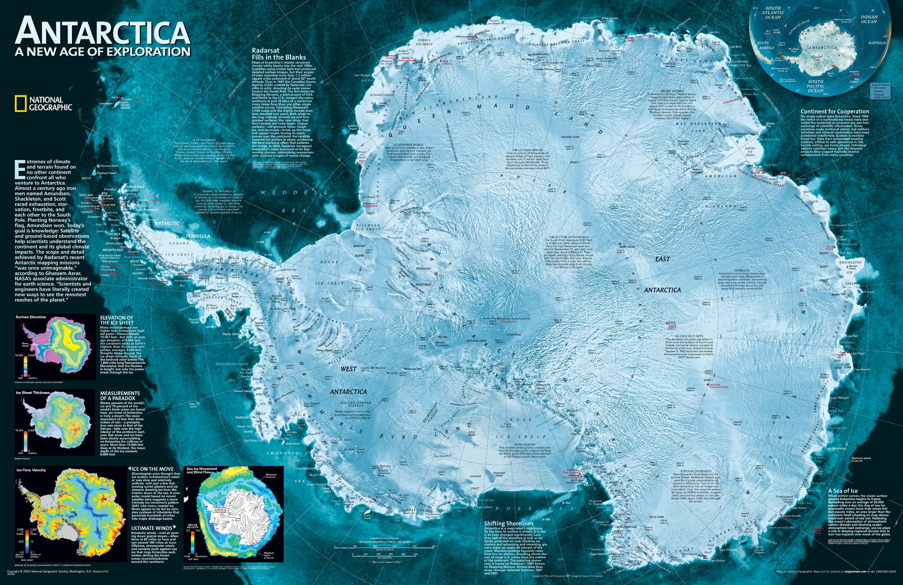
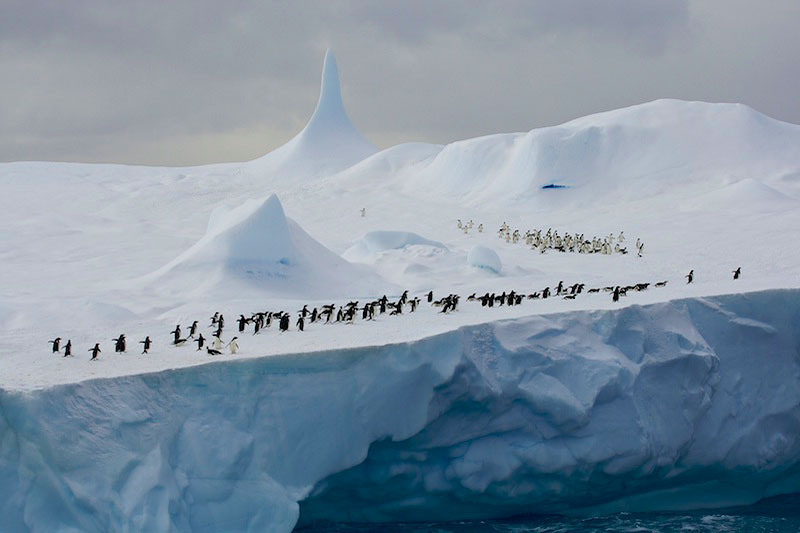
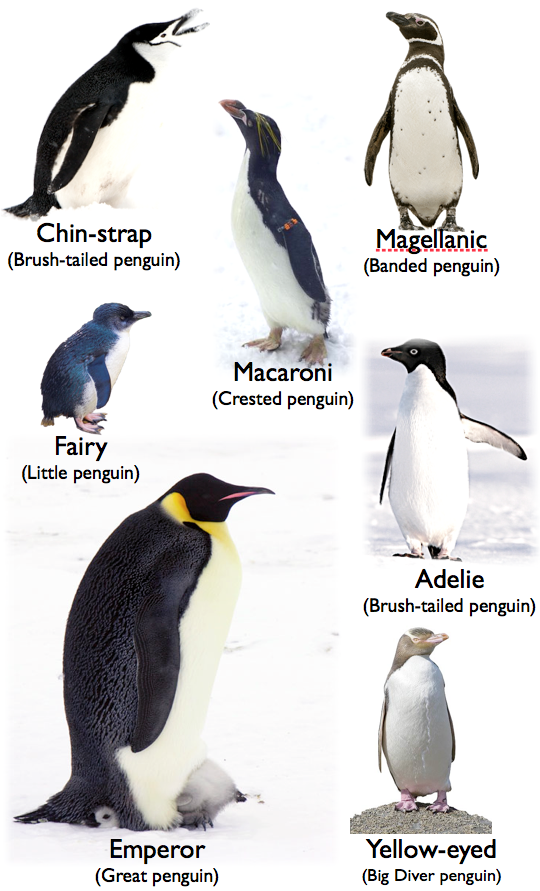
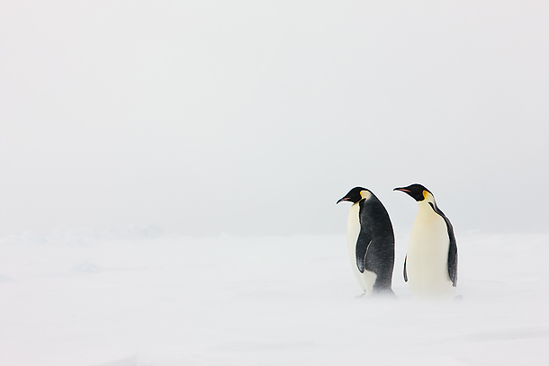

On the Run
There is a place, I sometimes go,because it is, so very cold.
150 researchers took part in the Swiss Antarctic Circumnavigation Expedition (ACE), which ran from December 2016 to March 2017 on board the Russian ship Akademik Treshnikov.
Liam was squinting at the thermometer in the bright white light outside the frosted window. Beyond him, snow blew in gusts across the frozen expanse. His eyes followed a tiny jet-stream of ice particles arching around the stabelizing guide-wires of their tent and into the Antarctica twilight.

Lost is thought, he muttered to himself, "We have to do a lot more than just follow, we have to steer, find situations, create events that draw attention."
Jon paused from stirring his tea on the other side of the tent. "Can a penguin be "steered"?"
Liam had started his career in Indiana as a tornado chaser, selling footage to national news outlets. Most of the time the chasers themselves were the real story. Pretty similar this time, only now instead of chasing storms, they would be chasing penguins deep into the Antarctica winter, heading toward the South Pole. Liam knew that to bring attention to a story, it would have to have a cliffhanger, with someone in jeapardy.
Their first trip to Antarctica was three years ago, now they had returned to create the type of orchestrated edge-of-your seat event Liam had imagined. But before embarking on that path, let me bring you up to speed on what more traditional scientists have learned studying penguin populations by hitching rides on boats, full of tourists...
{kind=link}
The Death March of the Penguins
August 3, 2008 - researcher Julia Whitty writes...
We have only a couple of hours ashore to count an expected two or three thousand penguins [before the tourism boat departs], with a few cross-country miles to hike to and from the rookery across unknown terrain, orienteering via a hand-drawn map that might as well say here be dragons for all it's worth. Ordinarily, penguin rookeries aren't cryptic places. They advertise through a landscape of jittery overactivity, a soundscape of braying, buzzing, and honking, and a scentscape reeking of guano and treacly dead things.
Except we can't find this one, and resort to sniffing over sea cliffs 150 feet high. Below, icebergs rear like Mormon temples from the battleship-gray waters of the Bransfield Strait. A few weeks back, a smaller version of one of these white behemoths sank the venerable Antarctic tour ship the Explorer in view from here, stranding 154 passengers and crew in lifeboats for four hours. The first ship to the rescue was the National Geographic Endeavour -- Lynch's and my ride, anchored offshore now.
We power hike until the snowfields give way to desolate, burnt slopes of ejected volcanic boulders. The island has the feel of a tensed muscle overdue for another tectonic release. The last eruption here was estimated by the dating of lichens as 1905 -- the same year French polar explorer Jean-Baptiste Charcot began to amass 32-plus volumes of observations on the Antarctic Peninsula, a treasure chest of data that Lynch and her colleagues still mine today.

In the lee of the island's summit we finally spy a scattering of a few hundred Adelie and chinstrap penguins where we were expecting thousands. They're subdued, with nary an ecstatic display to be seen, that head-craning, chest-pumping, flipper-flapping performance complete with hee-hawing calls. The Adelies are clustered on empty nests, with only 11 chicks among them. A pitiful tally for an entire year's breeding effort.
Hiking back into radio range, we hear from Ron Naveen, counting southern giant petrel nests on the other side of the island. It's terrible here, he reports, just awful. At first I picture him befouled by stomach-oil spit from the bellies of the huge albatross-like birds the whalers called stinkers. But his concern is that he's found only 75 nests in a colony that once housed more than 600. Worse, it appears all the petrels are sitting on eggs, far too late in the season for the chicks to survive. The whole island is a bust.

Breeding success in Antarctica is highly variable. Local events -- rain, heat, snowfall -- can crash an entire season. In East Antarctica, southern giant petrels have been found dead on their nests, a single egg nestled in the brood patch, the birds having succumbed to enormous, burying snows. Yet what's happening now is indicative of a larger meteorological reality. The western Antarctic Peninsula is warming faster than any place on Earth. Wintertime temperatures have risen a staggering 9 degrees Fahrenheit in 50 years. What was once a cold, dry place has become a warm, wet place. The wildlife is reeling from the chaos, some finding opportunity, others catastrophe. On Penguin Island, Adelie populations have plummeted 75 percent since 1980.
Returning across the high flanks of the island, Lynch and I pass a pair of chinstraps -- chinnies, as they're affectionately known -- waddling toward the distant colony, wings cranked open for balance, lurching from one webbed foot to the other, climbing hard. It's an impressive feat of penguin mountaineering. The pair rests, facing each other, as if conferring on their own adventurous conundrum. We chuckle, though we're puzzled as to why they don't just swim to their front doorstep on the far side of the island.
Of course, there's no telling why penguins make one decision versus another, why they elect a long and difficult path when an easier way is obvious. Any more than we can figure the bizarrely perilous choices of our own kind.

In 1774, after enduring tempests, gales, and fogs, Captain James Cook came up hard against the Antarctic ice sheet and turned back. He never saw the land beyond, land he thought "doomed by nature to everlasting frigidness ... whose horrible and savage aspect I have no words to describe." He predicted another explorer would, though "I shall not envy him the honour of the discovery but I will be bold to say that the world will not be benefited by it."
It's still a hard sell, the notion that this frozen continent and its frozen-ocean partner to the north have much relevance to our temperate world. Naveen and Lynch are here to count dwindling numbers of penguins -- because, Naveen says, doing so is like looking into a crystal ball and seeing our own future beset by climate change. They're censusing three species (Adelies, chinstraps, gentoos), plus two seabirds (blue-eyed shags, southern giant petrels), at 123 sites in a long-term research project known as the Antarctic Site Inventory.
Fifty years ago there was no infrastructure for tourists in Antarctica. This year, more than 80,000 tourists will visit on over 60 vessels. The only obstacles to visitation these days are financial -- Lindblad's cheapest berths aboard the Endeavour cost $10,250, plus hefty airfares -- though clearly it's worth it. After all, we're all here, tourists, explorers, researchers, writers, sharing similar concerns about a frozen world necessary for our well-being. Thankfully scientists like Julie Whitty are able to tag along.
Read more about Julia's Travels.
Broken Birds
"Your mother is here. Please give me a heads up the next time you run off." This was the last message his wife had sent before they passed out of range.
Jon was a writer who sought hard-to-reach places to create click-bait. Their ship reported they had gone missing in sub-zero conditions. The story spread quickly, largely thanks to the picture of penguines hunkering down in the icy wind minutes before their disappearance.
Fortunately this was an intentional episode of getting lost. Like most of the penguins they watched the first day, Jon and Michael were rational. Most penguins preferred the warmer coastal cliffs over the fierce winds on the interior ice shelf, but not the two they were following now.
The majority of penguin behavior had a fairly obvious explaination - avoiding predators, finding a mate, catching food, staying warm, but every once in while a few birds broke off from the pack and waddled deep into the continent's interior. But why? This was the big question the guys had come to answer.
With the help of a university friend and a portable digital microscope, Jon would be recording data on birds' physical condition at the time of death. Specifically, he would be imaging the cells responsible for magnetic direction finding by taking tissue sample from the birds' eyes and ears. Hopefully the samples would reveal if something was biologically different in the physiology of these arrant birds. Were they ill, insane, or simply free spirited, independent thinkers. Were they simply born this way? Jon and Michael hoped to use the data to identify what made these wandering birds unique.
They had come to find a renegade bird to follow to it's death, then collect tissue samples before the magnietically sensitive cells were frozen.
They couldn't simply catch a wandering bird. They had to confirm that the bird was actually on a march to its death. Otherwise they couldn't be sure it wouldn't simply turn around and head back to the coast after a long walk. Fortunately they had found such a pair on the second day, and their expedition had now become a pursuit to the death.

The two birds they were following had no shortage of energy. Even with their tiny legs, Jon and Liam had a very challenging time keeping up. Today, after another six hours of following a course due south, they were 12 kilometers deeper into the heart of the Antarctic continent.
The days were short this time of year, and soon another long 18 hour night had begun. The two penguins were holding up much longer than they expected, much better than their followers.
To make things worse, a storm was drawing near. To get out of the wind, Michael set up their tent against a shltering ledge overlooking the vast plane of ice. Jon shot photos, then the two made dinner and settled in for the rest of the long night. With the fierceness of the wind, they were a bit worried the tracks of the birds would no longer be visible in the morning.
In the middle of the night, Jon awoke to the sound of one of the birds and even stronger winds. While Liam slept, Jon tied a rope to his tent and went out into the night to see if the birds were still nearby. Sure enough, there was one of the birds, looking into the distance and making a calling sound.
He walked forward to see if the other bird was nearby. Little did he realize the snow along the ledge past the tent was so soft. He grasped for his rope, but it slipped through his ice covered glove. The fall was short, but there was no way to get back up to the upper level back to the tent was from this side of the gorge.
Jon was completely exhausted after an hour of trying to get back up the edge, after already being worn ragged from three days of hiking. The increasingly loud roar of the wind drowned out his calls to wake up Liam. If only he'd tied together a longer rope he could have climbed back up now.
Stumbling across the uneven ice field, he slumped down in frustration, when suddenly he felt a lump bump hard against the side of his leg. The tiny bird had found him, and was nudging him to walk forward and not give up.

Clearly this little fellow had not lost his sense of direction. Even in the blinding snow, he led Jon on a path that curved and swerved around ice and rocks, but always returned to the direction they needed to go to get back the upper plateau.
How do birds know which way to go?
In 2012, scientists Le-Qing Wu and David Dickman found cells in birds' ears that are tuned to specific directions of the magnetic field using magnetoreception.
Bird Eye Cryptochrome Research
Many birds and insects have their own compass thanks to magnetically sensitive molecules in their ears and eyes that help them tell direction when other landmarks are not visible.
Birds' eyes are loaded with a protein called cryptochrome, which is sensitive to the Earth’s magnetic fields. Birds might be able to see magnetic fields overlaid on top of their normal vision! Much cooler than Google Glasses.

After the storm, we followed the two birds as they started a new route toward the coast, covering almost 32 kilometers in two days. About how many miles is that? My brain was too chilled to think. In the dim morning light of our fifth day on the ice, we could make out the edge of a human-made structure on the horizon ahead.
Continue: Look what we stumbled upon next!